Кожен концепт — закінчена міні-версія: обкладинка, зміст, два розвороти (ліва + права сторінка разом, як у руках читача), контакти. Клік по зображенню відкриває велике прев'ю.
Строга інформаційна сітка зі стилізованим декором. Дані домінують, типографіка вишикувана, мінімум декоративних форм. Кольорові пілюлі напрямків роботи (FSLC / WASH / PROTECTION / SHELTER) як графічний акцент.
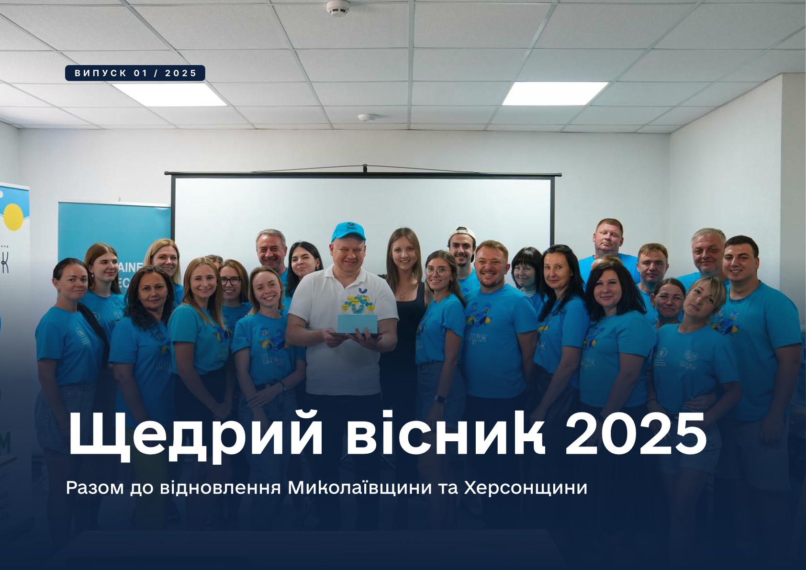
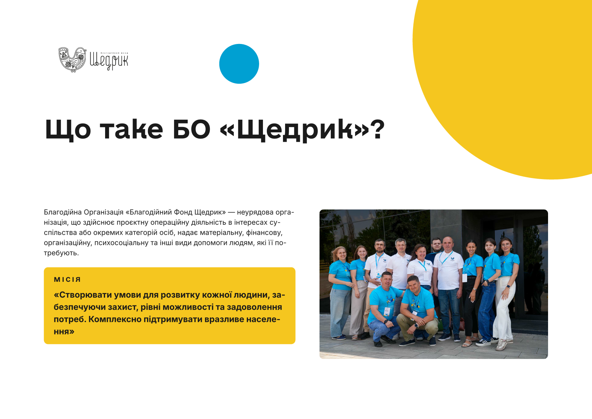
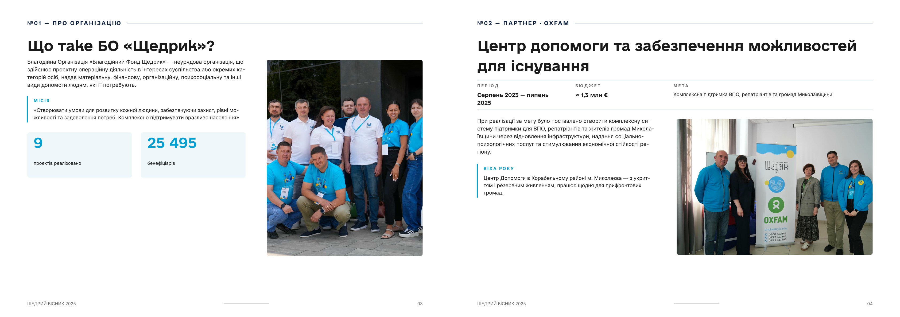
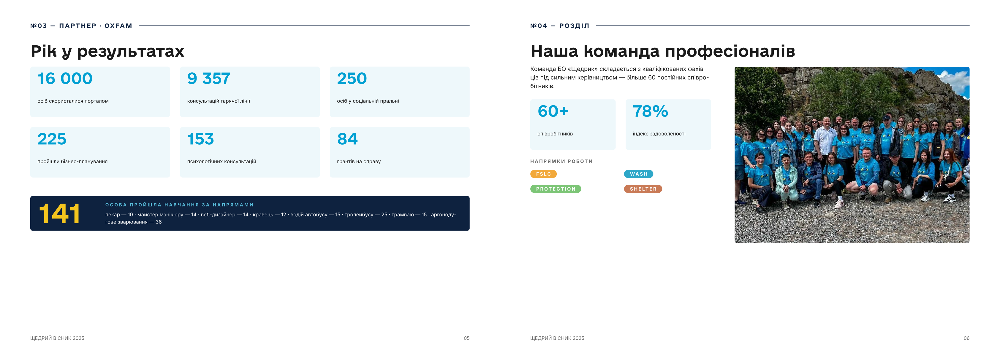
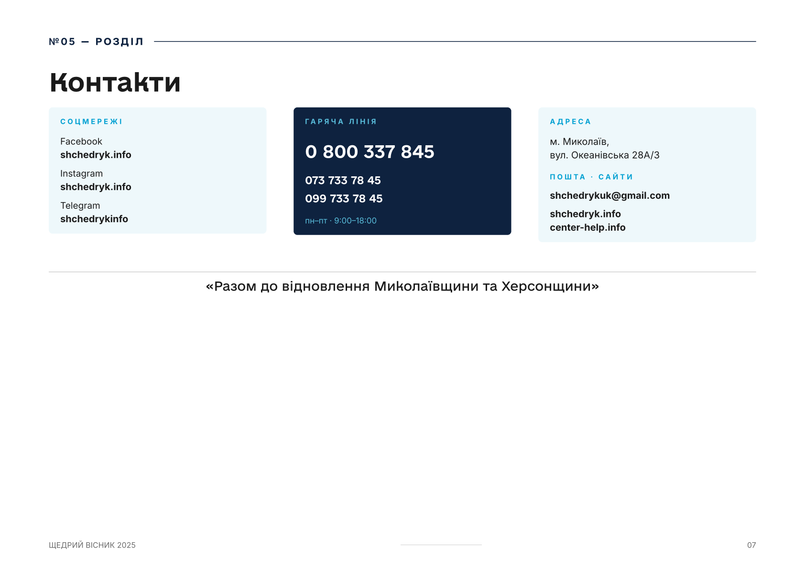
Збалансований editorial — фото домінують, drop-caps на старті абзаців, pull-quotes з вертикальною cyan-rail, по одному декоративному акценту на сторінку (жовте кільце-контур ≤10мм).
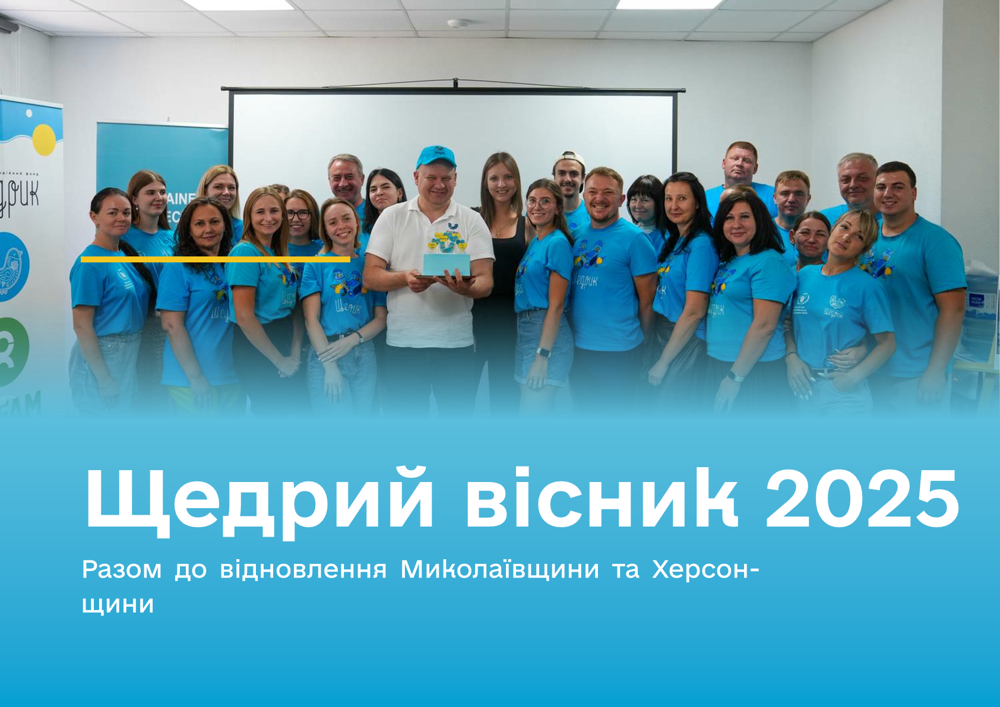
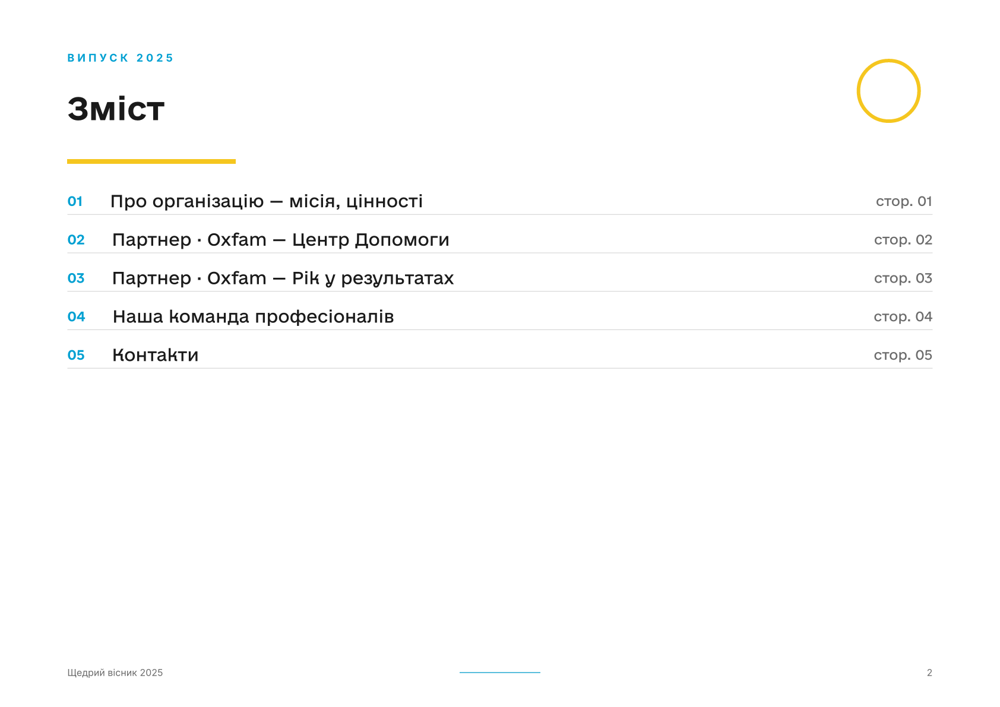
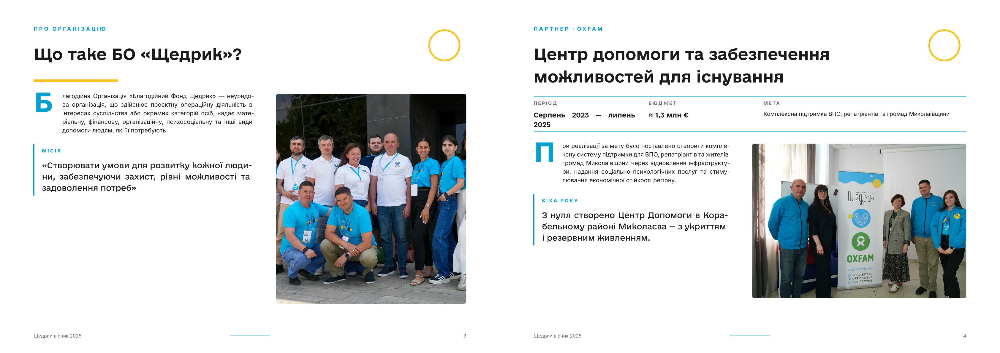
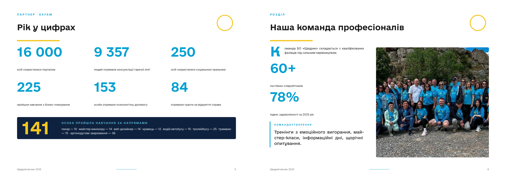
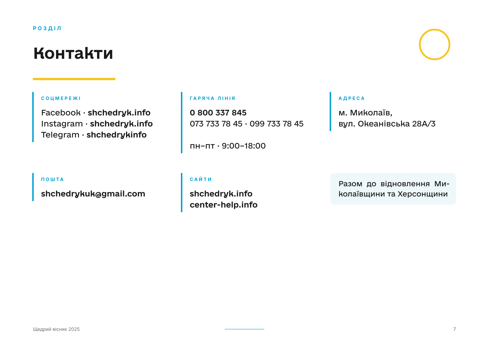
Підкреслено-декоративний з домінантою жовтого: ініціали у sun-кругах відкривають абзаци, sun-stat виносить ключові цифри в круги, sun-rail обрамляє цитати та місію. Один хвилястий divider перед слоганом на фінальній сторінці як акцент-завершення.
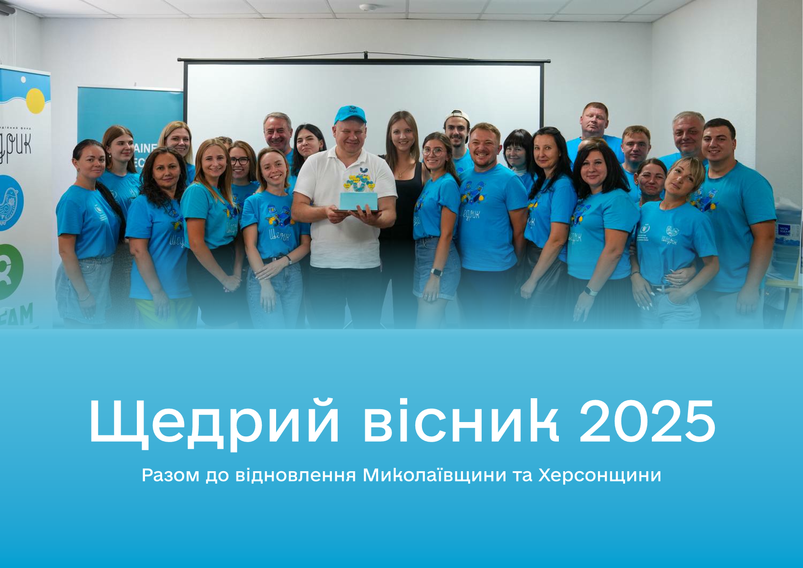
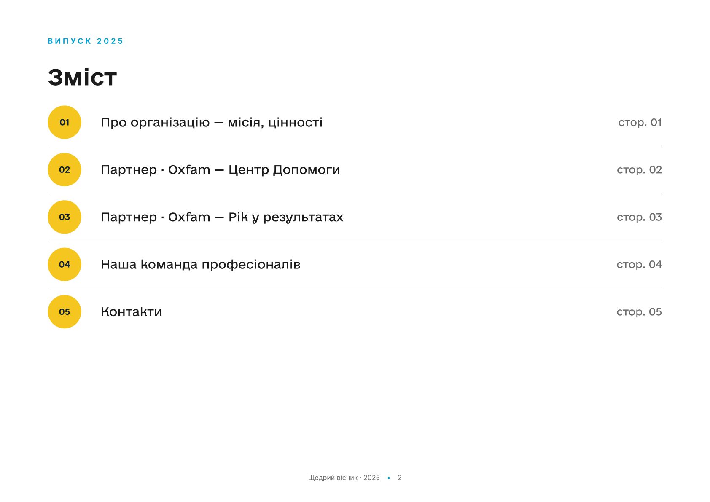
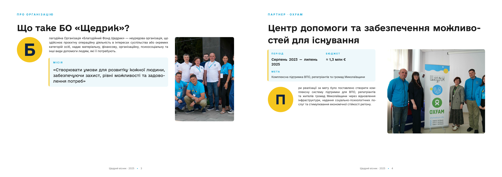
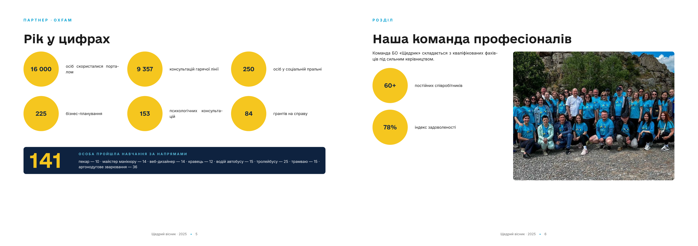
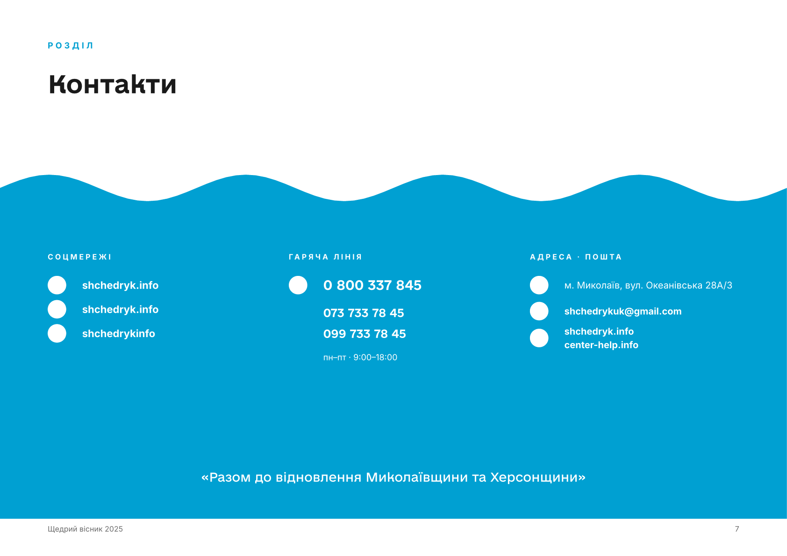